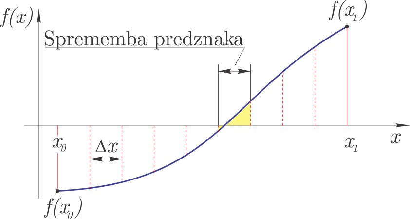
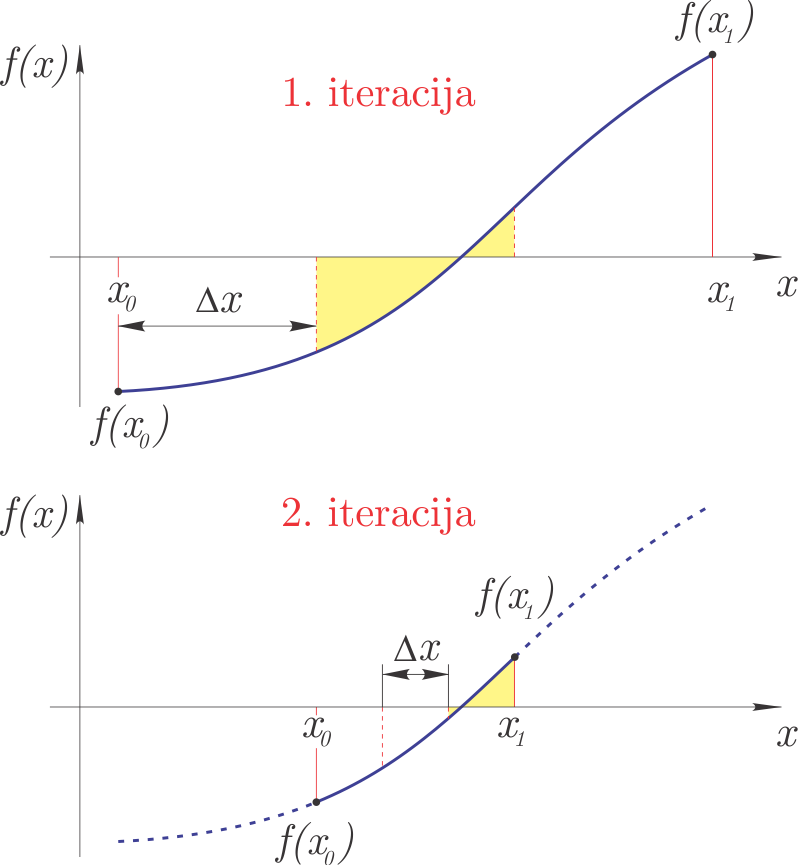
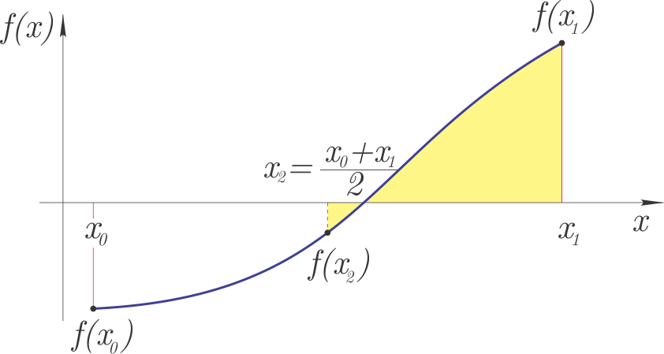
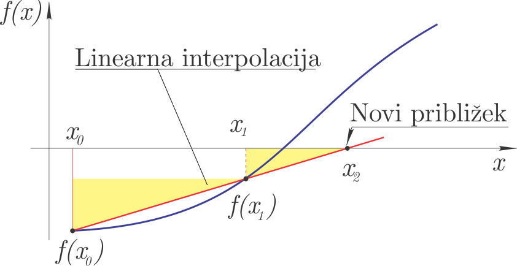
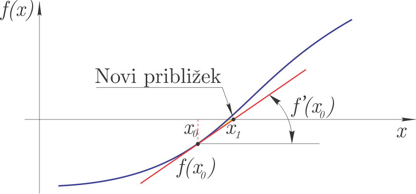
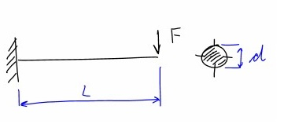

Reševanje enačb
Contents
Reševanje enačb#
Uvod#
Za uvod si oglejmo spodnji video:
from IPython.display import YouTubeVideo
YouTubeVideo('17d55KE8SIU', width=800, height=300)
V okviru reševanja enačb obravnavamo poljubno enačbo, ki je odvisna od spremenljivke \(x\) in iščemo rešitev:
Rešitvam enačbe rečemo tudi koreni (angl. roots). Koren enačbe \(f(x)=0\) je hkrati tudi ničla funkcije \(y=f(x)\).
Funkcija \(y=f(x)\) ima lahko ničle stopnje:
ničla prve stopnje: funkcija seka abscisno os pod neničelnim kotom,
ničle sode stopnje: funkcija se dotika abscisne osi, vendar je ne seka,
ničle lihe stopnje: funkcija seka abscisno os, pri ničli stopnje 3 in več imamo prevoj (tangenta je vzporedna z abscisno osjo).
Tukaj je pomembno izpostaviti, da iščemo rešitev poljubne enačbe \(f(x)=0\). Če za linearne, kvadratne ali kubične enačbe, lahko določimo analitične rešitve; za večino nelinearnih enačb analitične rešitve ne moremo določiti. Iz tega razloga so numerični pristopi toliko bolj pomembni.
Omejitve funkcije \(f(x)\)#
Za funkcijo \(y=f(x)\) zahtevamo, da je na zaprtem intervalu \([x_0, x_1]\) zvezna. Pri računanju ničel, se bomo omejili samo na ničle prve stopnje.
Zgled#
Poljubno funkcijo \(y=f(x)\) lahko definiramo s Pythonovo funkcijo; za zgled tukaj definirajmo polinom:
def f(x):
return x**3 - 10*x**2 + 5
Ker pa gre za polinom \(x^3-10x^2+5\) s koeficienti [1, -10, 0, 5] pa je bolje, da ga definiramo s pomočjo np.poly1d:
numpy.poly1d(c_or_r, r=False, variable=None)
kjer so parametri:
c_or_rkoeficienti polinoma s padajočo potenco ali če jer=Trueničle polinoma,rje privzetoFalse, kar pomeni, da se podajo koeficienti polinoma,variablespremenljivka, ki se izpiše pri uporabi funkcijeprint().
Uvozimo numpy in definirajmo polinom:
import numpy as np # uvozimo numpy
f = np.poly1d([1, -10, 0, 5]) # definiramo koeficiente polinoma
print(f) # prikažemo polinom
3 2
1 x - 10 x + 5
Prikažimo funkcijo \(f(x)\):
import matplotlib.pyplot as plt # uvozimo matplotlib
%matplotlib inline
x_r = np.linspace(-1, 1, 100)
plt.axhline(0, color='r', lw=0.5) # horizontalna črta,
plt.plot(x_r, f(x_r), label='$f(x)$') # da je ničla nekje blizu $x = 0.7$.
plt.legend();

Opazimo, da so ničle funkcije \(f(x)\) blizu -0,7 in +0,7. Objekt poly1d ima atribut roots ali tudi r (glejte dokumentacijo), ki vrne te ničle:
f.r
array([ 9.94949106, 0.73460351, -0.68409457])
V nadaljevanju bo naš cilj numerično določiti ničlo za poljubno funkcijo f.
Inkrementalna metoda#
Inkrementalno reševanje temelji na ideji, da v kolikor ima funkcija \(f(x)\) pri \(x_0\) in \(x_1\) različna predznaka, potem je vmes vsaj ena ničla. Zaprti interval \([x_0, x_1]\) razdelimo torej na odseke širine \(\Delta x\); na odseku, kjer opazimo spremembo predznaka, je vsaj ena ničla funkcije.
Metoda je prikazana na sliki. 
Za ničlo zahtevamo:
kjer je \(\epsilon\) zahtevana natančnost rešitve in \(D\) izbrana majhna vrednost, ki prepreči, da bi kot ničlo razpoznali pol (kar sicer zaradi pogoja zveznosti ni mogoče).
Inkrementalna metoda ima nekatere slabosti:
je zelo počasna,
lahko zgreši dve ničli, ki sta si zelo blizu,
večkratne sode ničle (lokalni ekstrem, ki se samo dotika abscise) ne zazna.
Inkrementalna metoda spada med t. i. zaprte (angl. bracketed) metode, saj išče ničle funkcije samo na intervalu \([x_0, x_1]\). Pozneje bomo spoznali tudi odprte metode, ki lahko konvergirajo k ničli zunaj podanega intervala.
Zaradi vseh zgoraj navedenih slabosti inkrementalno metodo pogosto uporabimo samo za izračun začetnega približka ničle.
Numerična implementacija#
Poglejmo si sedaj inkrementalno iskanje ničel funkcije:
def inkrementalna(fun, x0, x1, dx):
""" Vrne prvi interval (x1, x2) kjer leži ničla
:param fun: funkcija katere ničle iščemo
:param x1: spodnja meja iskanja
:param x2: zgornja meja iskanja
:param dx: inkrement iskanja
"""
x_d = np.arange(x0, x1, dx) # pripravimo x vrednosti
f_d = np.sign(fun(x_d)) # pripravimo predznake funkcije
f_d = f_d[1:]*f_d[:-1] # pomnožimo sosednje elemente
i = np.argmin(f_d) # prvi prehod skozi ničlo
# vsota abs funk vrednosti
x0 = x_d[i]
x1 = x_d[i+1]
D = np.abs(fun(x0)) + np.abs(fun(x1))
return np.asarray([x0, x1]), D
Poglejmo sedaj uporabo na zgoraj definiranem polinomu:
rez_inkr, D = inkrementalna(f, 0., 1., 0.001)
rez_inkr
array([0.734, 0.735])
Ničla je izolirana z natančnostjo 0,001, preverimo še vsoto absolutnih funkcijskih vrednosti:
D
0.013071529000000304
Ugotovimo, da je relativno majhna; bomo pa se s sledečimi metodami trudili rezultat bistveno izboljšati.
Pripravimo sliko:
def fig():
plt.plot(x_r, f(x_r), label='$f(x)$')
plt.axhline(0, color='r', lw=0.5) # horizontalna črta
plt.axvline(rez_inkr[0], color='r', lw=0.5) # vertikalna črta
plt.axvline(rez_inkr[1], color='r', lw=0.5) # vetrikalna črta
plt.plot(rez_inkr, f(rez_inkr), 'ro', label='Inkrementalna metoda')
plt.xlim(0.73,0.74)
plt.ylim(-0.1, 0.1)
plt.legend();
Prikažimo rezultat:
fig()

Da smo torej na intervalu \([0, 1]\) izračunali rešitev z natančnostjo \(\Delta x=0,001\), smo morali 1000-krat klicati funkcijo \(f(x)\). Gre za zelo neučinkovito metodo, zato bomo iskali boljše načine; najprej s preprostim iterativnim inkrementalnim pristopom.
Iterativna inkrementalna metoda#
Iterativna inkrementalna metoda v prvi iteraciji z inkrementalno metodo omeji interval iskanja ničel pri relativno velikem koraku. Interval, najden v prvi iteraciji, se v drugi iteraciji razdeli na manjše intervale in ponovi se inkrementalno iskanje ničle. Tretja iteracija se nato omeji na interval določen v drugi in tako dalje. Z iteracijami zaključimo, ko smo dosegli predpisano natančnost rešitve \(\epsilon\).
Metoda je prikazana na sliki: 
Numerična implementacija#
def inkrementalna_super(fun, x0, x1, iteracij=3):
""" Vrne interval (x0, x1) kjer leži ničla
:param fun: funkcija katere ničlo iščemo
:param x0: spodnja meja iskanja
:param x1: zgornja meja iskanja
:iteraci: število iteracij inkrementalne metode
"""
for i in range(iteracij):
dx = (x1 - x0)/10
x0x1, _ = inkrementalna(fun, x0, x1, dx)
x0, x1 = x0x1
# vsota abs funk vrednosti
D = np.abs(fun(x0)) + np.abs(fun(x1))
return np.asarray([x0, x1]), D
S 30 klici funkcije \(f(x)\) tako dobimo podobno natančnost kot prej v 1000:
rez30, D30 = inkrementalna_super(f, 0., 1., iteracij=3)
rez30
array([0.734, 0.735])
rez_inkr
array([0.734, 0.735])
Seveda pa lahko natančnost bistveno izboljšamo z večanjem števila iteracij:
rez80, D80 = inkrementalna_super(f, 0., 1., iteracij=8)
rez80
array([0.7346035 , 0.73460351])
Preverimo še kriterij vsote absolutnih funkcijskih vrednosti, ki mora biti majhen:
D80
1.3073143190212022e-07
Bisekcijska metoda#
Na intervalu \([x_0, x_1]\), kjer vemo, da obstaja ničla funkcije (predznaka \(f(x_0)\) in \(f(x_1)\) se razlikujeta), lahko uporabimo bisekcijsko metodo.
Ideja metode je:
interval \([x_0, x_1]\) razdelimo na pol (od tukaj ime: bi-sekcija): \(x_2 = (x_0+x_1)/2\),
če imata \(f(x_0)\) in \(f(x_2)\) različne predznake, je nov interval iskanja ničle \([x_0, x_2]\), sicer pa: \([x_2, x_1]\),
glede na predhodni korak definiramo nov zaprt interval \([x_0, x_1]\) in nadaljujemo z iterativnim postopkom, dokler ne dosežemo želene natančnosti \(\left|x_1-x_0\right|<\varepsilon\).
Slika metode: 
Bisekcijska metoda spada med zaprte metode, ki vrne ničlo funkcije na podanem intervalu \([x_0, x_1]\).
Ocena napake#
Če v začetku začnemo z intervalom \(\Delta x = \left|x_1-x_0\right|\), potem je natančnost bisekcijske metode po prvem koraku bisekcije: $\(\varepsilon_1 = \Delta x/2,\)\( po drugem koraku: \)\(\varepsilon_2 = \Delta x/2^2\)\( in po \)n\( korakih: \)\(\varepsilon_n = \Delta x/2^n.\)$
Ponavadi zahtevamo, da je rešitev podana z natančnostjo \(\varepsilon\) in iz zgornje enačbe lahko izpeljemo število potrebnih korakov bisekcijske metode:
Seveda je število korakov celo število.
Numerična implementacija#
def bisekcija(fun, x0, x1, tol=1e-3, Dtol=1e-1, izpis=True):
""" Vrne ničlo z natančnostjo tol
:param fun: funkcija katere ničlo iščemo
:param x0: spodnja meja iskanja
:param x1: zgornja meja iskanja
:param tol: zahtevana natančnost
:param Dtol:največja vsota absolutnih vrednosti rešitve
:izpis: ali na koncu izpiše kratko poročilo
"""
if np.sign(fun(x0))==np.sign(fun(x1)):
raise Exception('Ničla ni izolirana. Root is not bracketed.')
n = np.ceil( np.log(np.abs(x1-x0)/tol)/np.log(2) ).astype(int) # števil iteracij
for i in range(n):
x2 = (x0 + x1) / 2
f1 = fun(x0)
f3 = fun(x2)
f2 = fun(x1)
if np.sign(fun(x2))!=np.sign(fun(x0)):
x1 = x2
else:
x0 = x2
D = np.abs(fun(x0)) + np.abs(fun(x1))
if D > Dtol:
raise Exception('Verjetnost pola ali več ničel.')
r = (x0+x1)/2
if izpis:
decimalk = int(np.log10(1/tol)) # ne deluje vedno in za vse primere:)
print(f'Rešitev: {r:5.{decimalk}f}, število iteracij: {n:g}, D: {D:5.5f}')
return r
Sedaj poskusimo najti ničlo z natančnostjo 1e-3:
bisekcija(f, 0, 1, tol=1e-3);
Rešitev: 0.735, število iteracij: 10, D: 0.01277
V desetih iteracijah smo dobili isto natančen rezultat kakor zgoraj pri iterativni inkrementalni metodi rez30. Poglejmo še izračun ničle s še večjo natančnostjo:
bisekcija(f, 0, 1, tol=1e-6);
Rešitev: 0.734603, število iteracij: 20, D: 0.00001
Hitrost izvajanja lahko preverimo s t. i. magic funkcijo timeit (dokumentacija), ki večkrat požene funkcijo in analizira čas izvajanja. Če je pred magic funkcijo dvojni znak %%, se izvede in meri čas celotne celice, če pa le enojni %, pa samo ene vrstice.
%%timeit
bisekcija(f, 0., 1., izpis=False)
670 µs ± 124 µs per loop (mean ± std. dev. of 7 runs, 1,000 loops each)
Iskanje ničle v okolici pola#
Poglejmo sedaj iskanje ničle funkcije tan v okolici pola (ničla dejansko ne obstaja):
x_t = np.linspace(-3, 3, 100)
plt.plot(x_t, np.tan(x_t), label='$\\tan(x)$')
plt.ylim(-10, 10)
plt.legend();

V primeru iskanja na intervalu \([-1, 1]\) najdemo pravo ničlo:
bisekcija(np.tan, -1, 1, tol=1e-3);
Rešitev: -0.000, število iteracij: 11, D: 0.00098
V primeru iskanja v okolici pola, pa nas program na to opozori (klic funkcije je tukaj zakomentiran, sicer se avtomatsko generiranje tukaj prekine):
# bisekcija(np.tan, -3, 0, tol=1e-6)
V scipy vgrajena bisekcijska metoda takega preverjanja nima (zaradi hitrosti) in bo vrnila rezultat, ki bo pa napačen. Pri uporabi moramo torej biti previdni.
Uporaba scipy.optimize.bisect#
Bisekcijska metoda je počasna, vendar zanesljiva metoda iskanja ničel in je implementirana znotraj scipy. Najprej jo uvozimo:
from scipy.optimize import bisect
bisect(f, a, b, args=(), xtol=2e-12, rtol=8.8817841970012523e-16, maxiter=100,
full_output=False, disp=True)
Funkcija bisect zahteva tri parametre: funkijo f ter parametra a in b, ki definirata zaprti interval [a, b]. Predznaka f(a) in f(b) morata biti različna. Ostali parametri, npr. absolutna xtol in relativna rtol napaka ter največje število iteracij maxiter so opcijski - imajo privzete vrednosti. Za več glejte dokumentacijo.
Poglejmo uporabo:
bisect(f, a=0, b=1, xtol=1e-3)
0.7353515625
in hitrost:
%timeit bisect(f, 0, 1, xtol=1e-3)
135 µs ± 12 µs per loop (mean ± std. dev. of 7 runs, 10,000 loops each)
Ugotovimo, da je naša implementacija bisekcijske metode približno 5-krat počasnejša.
Preverimo še lahko funkcijo tan(x), najprej na intervalu, kjer je funkcija zvezna:
bisect(np.tan, -1, 1)
0.0
Potem še v okolici pola, kjer ni zvezna:
bisect(np.tan, -3, -1)
-1.5707963267941523
kar je napačna rešitev!
Sekantna metoda#
Sekantna metoda zahteva dva začetna približka \(x_0\) in \(x_1\) in funkcijo \(f(x)\). Ob predpostavki linearne interpolacije med točkama \(x_0, f(x_0)\) in \(x_1, f(x_1)\) (skozi točki potegnemo sekanto, od tukaj tudi ime), se določi \(x_2\), kjer ima linearna interpolacijska funkcija ničlo. \(x_2\) predstavlja nov približek ničle.
Glede na sliko: 
lahko zapišemo (podobna trikotnika sta na sliki označena z rumeno):
Sledi, da je nov približek ničle:
V naslednjem koraku pri sekantni metodi izvedemo sledeče zamenjave: \(x_0=x_1\) in \(x_1=x_2\).
Sekantna metoda spada med odprte metode, saj lahko najde ničlo funkcije, ki se nahaja zunaj območja \([x_0, x_1]\).
Ocena napake#
Konzervativno lahko napako ocenimo iz razlike med dvema zaporednima približkoma:
Konvergenca in red konvergence#
Konvergenca pomeni, da zaporedje približkov konvergira k rešitvi enačbe \(\alpha\) (\(\alpha\) je rešitev enačbe).
Red konvergence označuje hitrost konvergiranja.
Če \(\varepsilon\) označimo napako približka in napako z vsakim korakom iteracije linearno zmanjšamo (\(C\) je konstanta):
govorimo o redu konvergence 1 (\(\varepsilon\) ima potenco 1)!
Pri predhodno obravnavani bisekcijski metodi napako na vsakem koraku zmanjšamo za \(1/2\) (\(\varepsilon_n/\varepsilon_{n-1} = C = 1/2\)). Bisekcijska metoda ima red konvergence 1.
Red konvergence sekantne metode je višji in jo je mogoče oceniti z:
Iz zgornje ocene sledi, da se na vsakem koraku iteracije število točnih cifer poveča za približno 60%. Ker je red konvergence višji od 1 in manjši od kvadratične, tako konvergenco imenujemo superlinearna konvergenca.
Še boljšo, kvadratično, konvergenco ima Newtonova metoda. Pri kvadratični konvergenci se na vsakem koraku iteracije število točnih cifer podvoji. Isti red konvergence ima tudi Ridderjeva metoda, ki je implementirana v paketu scipy (glejte dokumentacijo) in je zaprtega tipa ter sorodna sekantni metodi. Kljub uporabnosti si je tukaj ne bomo podrobno ogledali.
Numerična implementacija#
def sekantna(fun, x0, x1, tol=1e-3, Dtol=1e-1, max_iter=50, izpis=True):
""" Vrne ničlo z natančnostjo tol
:param fun: funkcija katere ničlo iščemo
:param x0: spodnja meja iskanja
:param x1: zgornja meja iskanja
:param tol: zahtevana natančnost
:max_iter: maksimalno število iteracij preden se izvajanje prekine
:param Dtol:največja vsota absolutnih vrednosti rešitve
:izpis: ali na koncu izpiše kratko poročilo
"""
if np.sign(fun(x0))==np.sign(fun(x1)):
raise Exception('Ničla ni izolirana. Root is not bracketed.')
for i in range(max_iter):
f0 = fun(x0)
f1 = fun(x1)
x2 = x1 - f1 * (x1 - x0)/(f1 - f0)
x0 = x1
x1 = x2
if izpis:
print('{:g}. korak: x0={:g}, x1={:g}.'.format(i+1, x0, x1))
if np.abs(x1-x0)<tol:
r = (x0+x1)/2
D = np.abs(fun(x0)) + np.abs(fun(x1))
if D > Dtol:
raise Exception('Verjetnost pola ali več ničel.')
r = (x0+x1)/2
if izpis:
decimalk = int(np.log10(1/tol)) # ne deluje vedno in za vse primere:)
print(f'Rešitev: {r:5.{decimalk}f}, D: {D:5.5f}')
return r
Poglejmo si uporabo:
sekantna(f, 0, 1., tol=1.e-8, izpis=True);
1. korak: x0=1, x1=0.555556.
2. korak: x0=0.555556, x1=0.707845.
3. korak: x0=0.707845, x1=0.737957.
4. korak: x0=0.737957, x1=0.734549.
5. korak: x0=0.734549, x1=0.734603.
6. korak: x0=0.734603, x1=0.734604.
7. korak: x0=0.734604, x1=0.734604.
Rešitev: 0.73460351, D: 0.00000
in hitrost
%timeit sekantna(f, 0, 1., tol=1.e-8, izpis=False)
235 µs ± 10.3 µs per loop (mean ± std. dev. of 7 runs, 1,000 loops each)
Kakor smo zapisali zgoraj, je sekantna metoda odprtega tipa. Rešitev enačbe je lahko zunaj podanega intervala. Poglejmo si primer:
sekantna(np.tan, 1, 2);
1. korak: x0=2, x1=1.41615.
2. korak: x0=1.41615, x1=1.85165.
3. korak: x0=1.85165, x1=1.69887.
4. korak: x0=1.69887, x1=1.97485.
5. korak: x0=1.97485, x1=2.09379.
6. korak: x0=2.09379, x1=2.43519.
7. korak: x0=2.43519, x1=2.76579.
8. korak: x0=2.76579, x1=3.05013.
9. korak: x0=3.05013, x1=3.13625.
10. korak: x0=3.13625, x1=3.14158.
11. korak: x0=3.14158, x1=3.14159.
Rešitev: 3.142, D: 0.00002
Uporaba scipy.optimize.newton#
Znotraj scipy je sekantna metoda definirana v okviru scipy.optimize.newton funkcije. Če le-tej namreč ne podamo funkcije, ki definira prvi odvod, potem je uporabljena sekantna metoda (glejte dokumentacijo).
Najprej jo uvozimo:
from scipy.optimize import newton
newton(func, x0, fprime=None, args=(), tol=1.48e-08, maxiter=50, fprime2=None)
Funkcija newton zahteva dva parametra: funkcijo func ter začetno vrednost x0. Opcijska parametra sta še fprime in fprime2 za prvi in drugi odvod funkcije func; če nista podana, se uporabi sekantna metoda (več o odvodih spodaj pri Newtonovi metodi). Največje število iteracij definira maxiter.
V primeru sekantne metode, se druga meja intervala izračuna glede na kodo:
if x0 >= 0:
x1 = x0*(1 + 1e-4) + 1e-4
else:
x1 = x0*(1 + 1e-4) - 1e-4
Poglejmo si uporabo:
r = newton(f, x0=0.1, tol=1.e-8)
f'Rezultat: {r:2.8f}'
'Rezultat: 0.73460351'
in hitrost
%timeit newton(f, x0=0.1, tol=1.e-8)
365 µs ± 32.7 µs per loop (mean ± std. dev. of 7 runs, 1,000 loops each)
Ugotovimo, da je naša implementacija sekantne metode podobno hitra.
Uporabimo še Ridderjevo metodo:
from scipy.optimize import ridder
r = ridder(f, a=0, b=1, xtol=1.e-8)
f'Rezultat: {r:2.8f}'
'Rezultat: 0.73460350'
Newtonova metoda#
V literaturi za Newtonovo metodo tudi najdemo izraza tangentna in Newton-Raphsonova metoda. Potrebuje en začetni približek \(x_0\), poleg definicije funkcije \(f(x)\) pa tudi njen odvod \(f'(x)\).
Princip delovanja metode je prikazan na sliki: 
Metodo bi lahko izpeljali grafično (s slike), tukaj pa si poglejmo izpeljavo s pomočjo Taylorjeve vrste: $\(f(x_{i+1})=f(x_i)+f'(x_i)\,\left(x_{i+1}-x_i\right)+O^2\left(x_{i+1}-x_i\right),\)\( če naj bo pri \)x_{i+1}\( vrednost funkcije nič, potem velja: \)\(0=f(x_i)+f'(x_i)\,\left(x_{i+1}-x_i\right)+O^2\left(x_{i+1}-x_i\right).\)$
Naredimo napako metode in zanemarimo člene višjega reda v Taylorjevi vrsti. Lahko izpeljemo:
\(x_{i+1}\) je tako nov približek iskane ničle.
Algoritem Newtonove metode je:
izračunamo nov približek \(x_{i+1}\),
računanje prekinemo, če je največje število iteracij doseženo (rešitve enačbe nismo našli),
če velja \(\left|x_{i+1}-x_i\right|<\varepsilon\) računanje prekinemo (izračunali smo približek ničle), sicer povečamo indeks \(i\) in gremo v prvi korak.
Opombi:
\(\varepsilon\) je zahtevana absolutna natančnost,
Newtonova metoda lahko divergira, zato v algoritmu predpišemo največje število iteracij.
Zgoraj smo omenili, da je Newtonova metoda ena izmed boljših metod za iskanje ničel funkcij. Ima pa tudi nekaj slabosti/omejitev:
spada med odprte metode,
kvadratična konvergenca je zagotovljena le v dovolj majhni okolici rešitve enačbe,
poznati moramo odvod funkcije.
Red konvergence#
Red konvergence Newtonove metode je kvadraten: $\(\varepsilon_n = C\,\varepsilon_{n-1}^{2},\)\( kjer je \)C\(: \)\(C=-\frac{f''(x)}{2\,f'(x)}.\)$
Konvergenca je torej hitra, v vsaki novi iteraciji se število točnih števk v približku podvoji.
Numerična implementacija#
def newtonova(fun, dfun, x0, tol=1e-3, Dtol=1e-1, max_iter=50, izpis=True):
# ime `newtonova` zato ker je `newton` vgrajena funkcija v `scipy`
""" Vrne ničlo z natančnostjo tol
:param fun: funkcija katere ničlo iščemo
:param dfun: f'
:param x0: začetni približek
:param tol: zahtevana natančnost
:max_iter: maksimalno število iteracij preden se izvajanje prekine
:param Dtol:največja vsota absolutnih vrednosti rešitve
:izpis: ali na koncu izpiše kratko poročilo
"""
for i in range(max_iter):
x1 = x0 - fun(x0)/dfun(x0)
if np.abs(x1-x0)<tol:
r = (x0+x1)/2
D = np.abs(fun(x0)) + np.abs(fun(x1))
if D > Dtol:
raise Exception('Verjetnost pola ali več ničel.')
if izpis:
decimalk = int(np.log10(1/tol)) # ne deluje vedno in za vse primere:)
print(f'Rešitev: {x1:5.{decimalk}f}, število iteracij: {i+1}, D: {D:5.8f}')
return x1
x0 = x1
raise Exception('Metoda po {:g} iteracijah ne konvergira'.format(max_iter))
Definirajmo polinom f in njegov prvi odvod df:
def f(x):
return x**3 - 10*x**2 + 0*x + 5
def df(x):
return 3*x**2 - 20*x
Izračunajmo sedaj ničlo:
newtonova(fun=f, dfun=df, x0=1, tol=1e-8);
Rešitev: 0.73460351, število iteracij: 5, D: 0.00000000
Preverimo hitrost izvajanja:
%timeit newtonova(fun=f, dfun=df, x0=1, tol=1e-8, izpis=False)
14 µs ± 1.38 µs per loop (mean ± std. dev. of 7 runs, 100,000 loops each)
Uporaba scipy.optimize.newton#
Znotraj scipy je Newtonova metoda definirana v okviru scipy.optimize.newton funkcije, ki smo jo že spoznali zgoraj pri sekantni metodi (glejte dokumentacijo).
newton(func, x0, fprime=None, args=(), tol=1.48e-08, maxiter=50, fprime2=None)
Če v funkcijo newton poleg funkcije func in začetne vrednosti x0 podamo tudi prvi odvod fprime, se dejansko uporabi Newtonova metoda.
Če podamo tudi drugi odvod fprime2, se uporabi Halleyeva metoda, ki temelji na izrazu:
Poglejmo si primer uporabe Newtonove metode v scipy.optimize:
r = newton(func=f, x0=1., fprime=df)
f'Rezultat: {r:2.8f}'
'Rezultat: 0.73460351'
In izmerimo hitrost:
%timeit newton(func=f, x0=1., fprime=df)
131 µs ± 11.4 µs per loop (mean ± std. dev. of 7 runs, 10,000 loops each)
Reševanje sistemov nelinarnih enačb*#
Rešujemo sistem enačb, ki ga v vektorski obliki zapišemo takole: $\(\mathbf{f}(\mathbf{x})=\mathbf{0}.\)\( V skalarni obliki zgornji vektorski izraz zapišemo: \)\(\begin{array}{rcl} f_0(x_0,x_1,\dots, x_{n-1})&=&0\\ f_1(x_0,x_1,\dots, x_{n-1})&=&0\\ &\vdots&\\ f_{n-1}(x_0,x_1,\dots, x_{n-1})&=&0.\\ \end{array}\)$
Reševanje sistema \(n\) nelinearnih enačb je bistveno bolj zahtevno kot reševanje ene same nelinearne enačbe. Tak sistem enačb ima lahko več rešitev in katero izračunamo, je odvisno od začetnih pogojev. Ponavadi nam pri dobri izbiri začetnih pogojev pomaga fizikalni problem, ki ga rešujemo.
Za računanje rešitve sistema enačb se Newtonova metoda izkaže kot najenostavnejša in pogosto tudi najboljša (obstajajo tudi druge metode, ki pa so velikokrat variacije Newtonove metode).
Podobno kot pri izpeljavi Newtonove metode za reševanje ene enačbe, tudi tukaj začnemo z razvojem funkcije \(f_i\) v Taylorjevo vrsto: $\(f_i(\mathbf{x}+\Delta \mathbf{x})=f_i(\mathbf{x})+\sum_{j=1}^n \frac{\partial f_i}{\partial x_j}\,\Delta x_j+O^2(\mathbf{\Delta x}).\)$
Naredimo napako metode, ko zanemarimo člene drugega in višjih redov ter zapišemo izraz v matrični obliki: $\(\mathbf{f}(\mathbf{x}+\Delta \mathbf{x})=\mathbf{f}(\mathbf{x})+\mathbf{J}(\mathbf{x})\,\Delta \mathbf{x},\)\( kjer je \)\mathbf{J}(\mathbf{x})\( *Jakobijeva* matrika pri vrednostih \)\mathbf{x}\(. Elementi Jakobijeve matrike so: \)\(J_{ij}=\frac{\partial f_i}{\partial x_j}.\)$
Če naj bo \(\mathbf{x}+\Delta \mathbf{x}\) rešitev sistema enačb, mora veljati: $\(\mathbf{0}=\mathbf{f}(\mathbf{x})+\mathbf{J}(\mathbf{x})\,\Delta \mathbf{x}\)\( in torej sledi: \)\(\mathbf{J}(\mathbf{x})\,\Delta \mathbf{x}=-\mathbf{f}(\mathbf{x}).\)$
Izpeljali smo sistem linearnih enačb, matrika koeficientov je označena z \(\mathbf{J}(\mathbf{x})\), vektor neznank je \(\Delta\mathbf{x}\) in vektor konstant \(-\mathbf{f}(\mathbf{x}).\)
Opomba: analitično računanje Jakobijeve matrike je lahko zamudno in zato jo pogosto približno izračunamo pri \(\mathbf{x}\) numerično:
kjer je \(h\) majhen premik in je \(\mathbf{e}_j\) enotski pomik v smeri \(x_j\). Če se Jakobijeva matrika izračuna numerično, govorimo o sekantni metodi in ne Newtonovi.
Pri numeričnem izračunu si lahko pomagamo s funkcijo scipy.optimize.approx_fprime (za podrobnosti glejte dokumentacijo).
Numerična implementacija#
Algoritem torej je:
Izberemo začetni približek \(\mathbf{x}_0\), največje število iteracij in postavimo indeks na nič: \(i=0\).
Izračunamo Jakobijevo matriko \(\mathbf{J}(\mathbf{x_i})\) in rešimo linearni sistem: \(\mathbf{J}(\mathbf{x}_i)\,\Delta \mathbf{x}_i=-\mathbf{f}(\mathbf{x}_i)\).
Izračunamo nov približek: \(\mathbf{x}_{i+1}=\mathbf{x}_{i}+\Delta\mathbf{x}_i\).
Če je napaka manjša od zahtevane, se postopek prekine*. Postopek prekinemo tudi, če je število iteracij večje od dovoljenega, sicer povečamo indeks \(i=i+1\) in se vrnemo v korak 2.
* Opomba:
Napako lahko ocenimo z normo razlike dveh zaporednih približkov:
kjer je \(i\) indeks iteracije in \(j\) indeks elementa.
Uporaba scipy.optimize.root#
Funkcija scipy.optimize.root ima obsežno dokumentacijo in omogoča večje število različnih pristopov:
root(fun, x0, args=(), method='hybr', jac=None, tol=None, callback=None, options=None)
Če uporabimo privzete parametre, moramo definirati zgolj vektorsko funkcijo fun in začetno vrednost x0.
Uvozimo funkcijo:
from scipy.optimize import root
Poglejmo si uporabo na zgledu (gre za zgled na str. 76, Jože Petrišič, Reševanje enačb, 1996, FS, UNI-LJ):
kjer je vektor \(\mathbf{x}=[x_0, x_1]\).
Najprej definirajmo Python funkcijo, ki vrne seznam rezultatov funkcij \([f_0(\mathbf{x}),f_1(\mathbf{x})]\):
def func(x):
return [x[0]**2 + x[0]*x[1] -10,
x[1] +3*x[0]*x[1]**2 - 57]
Definirajmo še Jakobijevo matriko:
def J(x):
return np.array([[2*x[0]+x[1], x[0]],
[3*x[1]**2, 1+6*x[0]*x[1]]])
Uporabimo začetne vrednosti \(x_0=1,5\) in \(x_1=3,5\) ter rešimo problem:
rešitev = root(fun=func, x0=[1.5, 3.5], jac=J)
rešitev
fjac: array([[-0.22347867, -0.97470882],
[ 0.97470882, -0.22347867]])
fun: array([-6.97220059e-12, 3.14770432e-11])
message: 'The solution converged.'
nfev: 10
njev: 1
qtf: array([-2.83570821e-08, -1.32374877e-08])
r: array([-29.54114937, -37.8158159 , -6.93953536])
status: 1
success: True
x: array([2., 3.])
Funkcija root vrne obsežen rezultat. Najbolj pomembna sta atribut x, ki predstavlja iskano rešitev, in atribut success, ki pove, ali je rešitev konvergirala:
rešitev.x
array([2., 3.])
rešitev.success
True
Nekaj vprašanj za razmislek!#
V simbolni obliki definirajte izraz: $\(f(x) = x^4 - 6.4\,x^3 + 6.45\,x^2 + 20.538\,x - 31.752.\)$
Narišite funkcijo \(f(x)\). Koliko ničel pričakujemo za funkcijo \(f(x)\)?
V simbolni obliki določite ničlo polinoma \(f(x)\) (uporabite sympy).
Kako preverimo, ali je ničla ekstrem?
Numerično najdite vse ničle z bisekcijsko metodo (uporabite
scipy).Numerično najdite vse ničle s sekantno metodo (uporabite
scipy).Numerično najdite vse ničle z Newtonovo metodo (uporabite
scipy).Podatke: $\(x=[0, 1, 2, 3, 4, 5]\)\( \)\(y=[0.95, 0.93, 0.87, 0.77, 0.64, 0.49]\)\( aproksimirajte s funkcijo \)\cos(a,x)\( (z uporabo ``scipy.optimize.curve_fit`` določite konstanto \)a$).
Na intervalu \(x=[0, 50]\) z bisekcijsko metodo poiščite vse ničle najdene funkcije \(\cos(a\,x)\).
Na intervalu \(x=[0, 50]\) z Newtonovo metodo poiščite vse ničle najdene funkcije \(\cos(a\,x)\).
S pomočjo
sympynajdite simbolno rešitev za: $\(x^2 + y -2=0\qquad\textrm{in}\qquad y^2 - 4=0.\)$Zgoraj definirani problem rešite še numerično s pomočjo
scipy.optimize.root.Na predhodnem vprašanju preizkusite različne metode (glejte pomoč).
Z uporabo bisekcijske metode dimenzionirajte prikazani upogibno obremenjeni nosilec dolžine \(L\) (obremenjen s točkovno silo \(F\)). Določite velikost polnega krožnega prereza \(d\).  \(F = 1 \mathrm{kN}\)
\(L = 1 \mathrm{m}\)
\(\sigma_{dop} = 120 \mathrm{MPa}\)Reševanje:
\(\sigma_u \leq \sigma_{dop} \to \frac{F\,L}{W} = \frac{F\,L\,32}{\pi\,d^3} = \sigma_{dop}\)
Dodatno#
Tisti, ki ste navdušeni nad Raspberry Pi in uporabljate njihovo kamero (npr. tole brez infrardečega filtra), vas bo morebiti zanimala knjižnica picamera.
Uporaba sympy.solve za reševanje enačb#
Za manjše sisteme lahko rešitev najdemo tudi simbolno. Poglejmo si zgornji primer:
import sympy as sym
sym.init_printing()
x, y = sym.symbols('x, y')
funkcije = [x**2 + x*y -10, y + 3*x*y**2 -57]
funkcije

sol = sym.solve(funkcije, x, y)
print(f'Število rešitev: {len(sol)}')
print(f'Prva rešitev: {sol[0]}')
Število rešitev: 4
Prva rešitev: (2, 3)